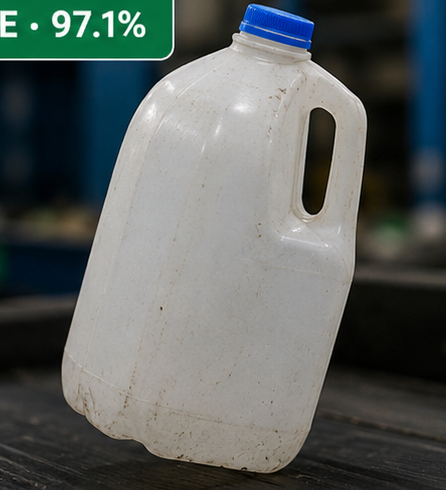
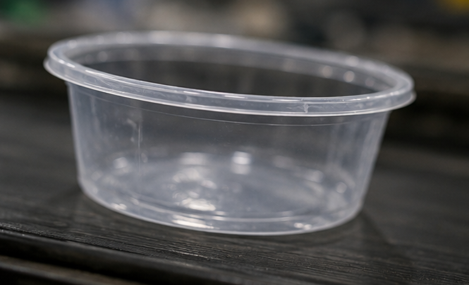

Recovery Intelligence
Recover More. Waste Less.
Track material from collection to sorting, recovery, and recycling with real-time operational intelligence.
01
Collect
02
Sort
03
Recover
04
Bale
05
Dispatch
06
Recycle
0%
Avg. Material Recovery Rate
0
Recyclers in the Network
0Kt
CO₂ Avoided to Date
MRF Intelligence
Smarter MRF Operations
Digitise weighing, bale inventory, quality checks, plant performance, and recycler dispatch in one operational platform.
See MRF PlatformWEIGHBRIDGE
0t
Inflow Today
↑ Zone B Run
SORTING
0%
Purity Rate
Above Target
BALE STOCK
0
Bales Ready
PET · HDPE · PP
DISPATCH
0
Trips Today
↑ On Schedule
QUALITY
A+
Bale Grade
Contamination Low
RECOVERY
0%
Recovery Rate
↑ Best Ever
INTAKE
0t
Pending QC
Mixed Plastic
UPTIME
0%
Plant Uptime
30D Average
AI VISION STREAM
Conveyor · MRF-BLR-01 · Line A
0% CONFIDENCE




FPS
0
SKUs / hr
0K
Polymers
0
Brands
0K